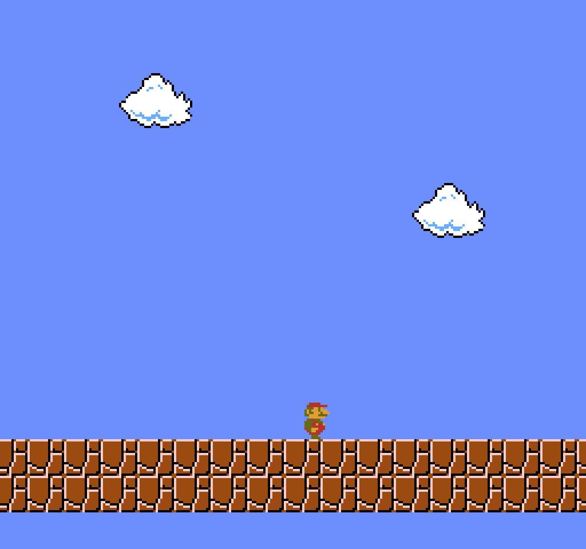

AIIDE 2026 Poster session
Did You Get the Level
You Asked For?
Bridging LLMs and PCGRL for Super Mario Bros. Level Generation
“Packed with enemies and wide pits; a real challenge.”
generated from the request above · played by an A* agent
Separate what was asked from how it is built
A
Language bridge
GPT-5.2 turns the request into 8 numbers, t ∈ [0,1]⁸.
→
B
Compose
A MaskablePPO policy stitches ~10 real corpus chunks.
→
C
Gated edit
The same policy applies macro-edits. Any edit that breaks the level is reverted.
→
D
Polish + A* gate
Exact metric fixes, then an A* agent must finish the level.

The LLM never touches a tile. So we can measure translation error and generation error separately.